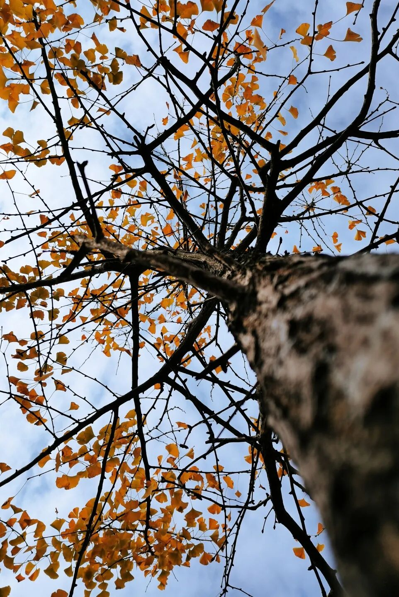
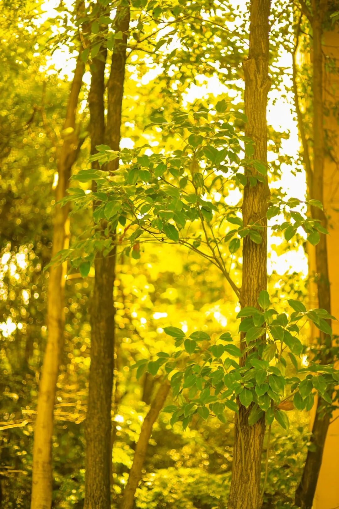
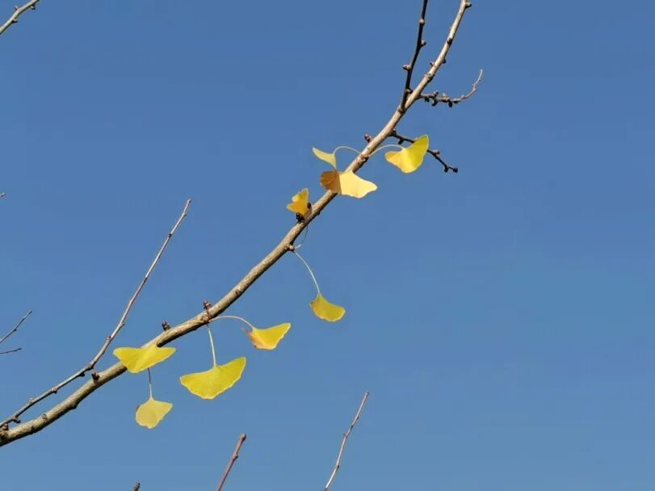
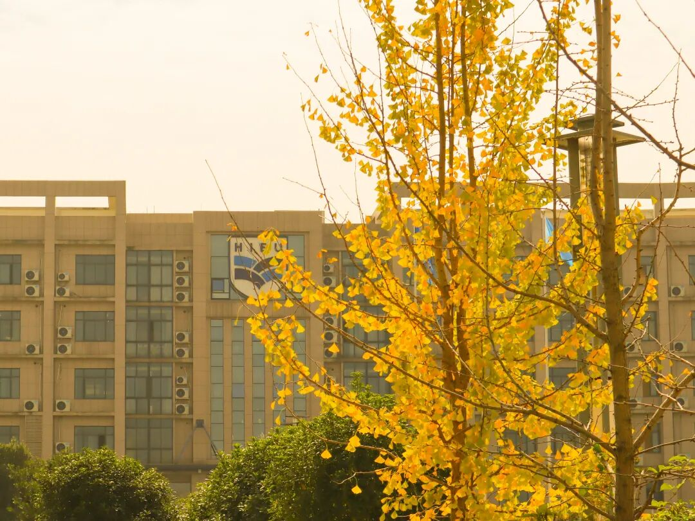
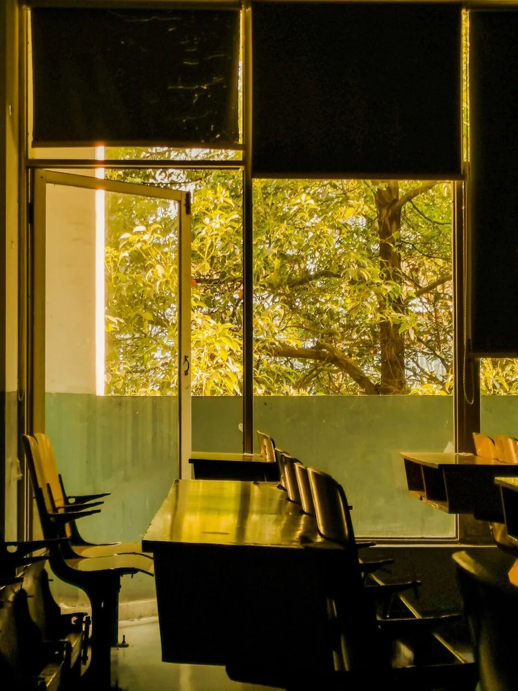
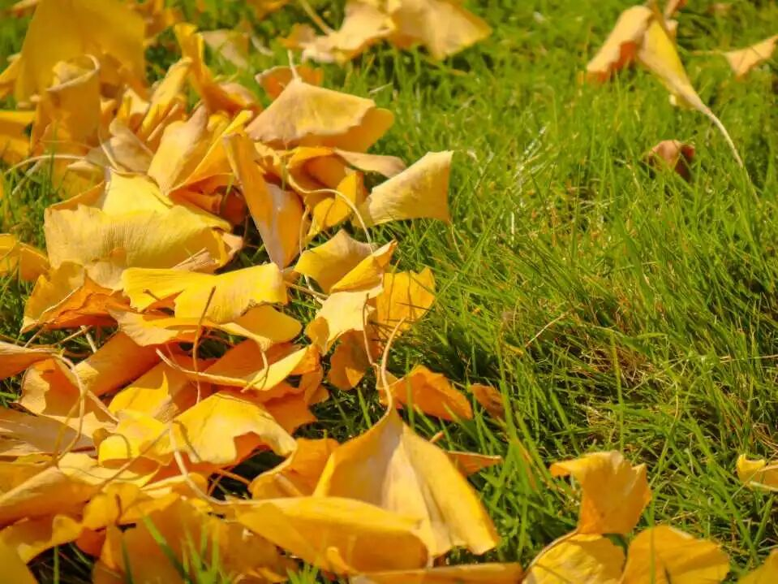
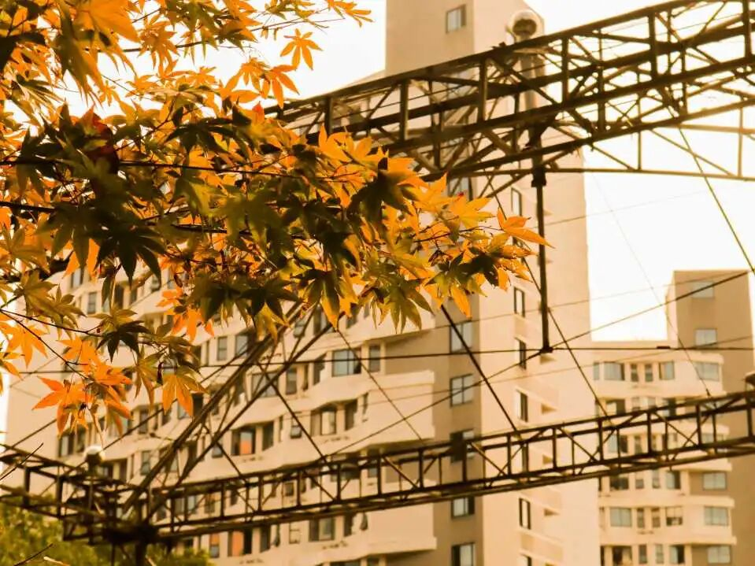
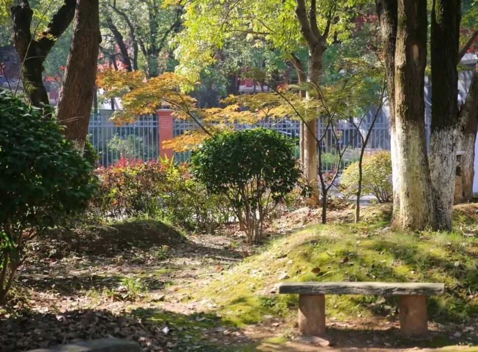
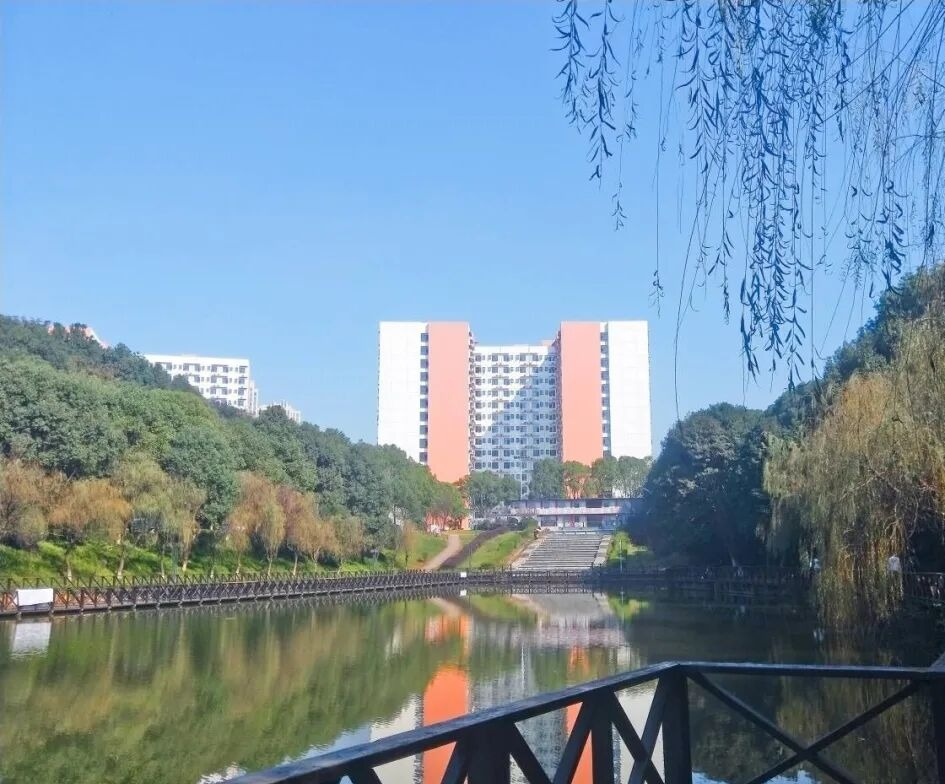

Hunan International Economics University
十月的风，把整座校园吹成了金色
Preface · 序
长沙的秋天总是来得犹豫。
先是某个清晨，风里忽然有了凉意；
再是某个午后，光落在肩上，
暖得让人想停下来。
我们总是靠日历确认季节，可校园不这么算。它用一件外套、一杯热饮、一段忽然变短的天光来计数。
直到银杏开始落——我们才确信，秋天真的来了。
Chapter One · 银杏
涉外最先黄的地方，是那条我们走了无数遍的路。风从枝隙里穿过，把叶子一片一片地数。数到某个下午，整条路忽然就亮了——那种亮不刺眼，是被阳光酿过一遍的亮。
教学楼前 · 晴 · 午后三点
有人停下来拍照，有人只是站着，什么也不做。抬头是碎金，落下是细雨一样的簌簌声。风再大一点，整棵树就轻轻抖一下，像在把积攒了一整年的光，分给路过的人。


左：逆光的林间 · 右：晴空里最后的几片叶

教学楼上，校徽藏在叶隙之间
不知道秋天是从哪一天开始的。
只知道抬头的那一秒，
它已经在头顶了。
Chapter Two · 窗
午后的光斜切进来，
在木色的桌面上走成一条金色的河。
风把树影摇碎，落在摊开的书页上。粉笔灰浮在光里，慢得像是也在等下课铃。整间教室安静得能听见外面叶子擦过玻璃的声音。

空教室 · 夕照 · 17:40
很多年后，我们大概会忘记那节课讲了什么，却记得那扇窗外的颜色——绿里透黄，黄里透亮。记得有人趴在桌上睡着，有人把手机举向窗外，想留住一点什么。

Chapter Three · 落金
叶子落下来，不急着扫。
草地替它们接住，一层一层铺开，像谁把整个秋天摊在太阳底下晾晒。绿还没退干净，黄已经压上来，两种颜色挨在一起，谁也没让谁。
踩上去有细碎的声响——那是秋天在回答你。它一直在，只是平时不太说话。

另一棵树也开始了 · 橙红是秋天更用力的一笔
Chapter Four · 湖畔
湖水把楼、把树、把天空收进去，
风一吹，又还回来。
树影斜斜地落在台阶上，有人在背书，有人只是发呆。日头一点点偏西，光从树顶滑到树干，再从树干滑到地上——时间在这里有了长度。

林间 · 一张等不到人的长椅
柳枝垂得很低，几乎要碰到水面。楼的橙、叶的黄、天的蓝，一起落进湖里，被风揉皱，又慢慢铺平。偶尔有叶子打着旋落下去，涟漪一圈一圈，把整个下午推得很远。

湖畔 · 倒影比实景更像秋天
这里的时间比别处慢半拍——慢到能听见叶子落水的声音，慢到你终于愿意把手机放下来，看一会儿什么也不发生的水面。
适合在傍晚六点前来一趟Epilogue · 尾声
短得像一次课间
可那些落在肩上的叶子，会在很多年后忽然被想起。想起那个下午，你站在树下，什么也没做，却觉得很好。
湖南涉外经济学院
2026 · 秋 · 校园影像志